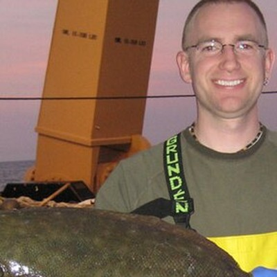
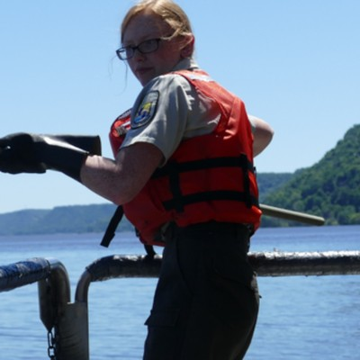

Our story
The standard for Gulf Coast spearfishing
Gulf Coast Spearfishing Charters is the premier dive charter out of Gulf Shores & Orange Beach—USCG Masters, purpose-built vessels, and selective reef-to-rig itineraries for certified divers who will not settle for a converted fishing boat.
Why we own the category
We started as working captains who were tired of “fishing charter” boats pressed into spearfishing duty. Gun racks, dive platforms, oxygen kits, and honest weather calls matter as much as fish on ice. Today we run a two-vessel fleet with captain-assigned boats so guests know exactly who they are diving with and where they will meet on the dock.
Our home waters stretch from nearshore Alabama artificial reefs to the oil-rig corridors of the northern Gulf. Whether you are chasing seasonal Red Snapper, staging an Amberjack day, or culling lionfish for reef health, the day is built around certification, conditions, and captain authority—not a one-size-fits-all brochure trip.
Captains

Capt. Marcus Vance
USCG 100-Ton Master
Fourteen years stewarding once-in-a-lifetime Gulf days. FII Advanced Freediver, PADI Master Scuba Diver Trainer, and DAN Oxygen Provider. Assigned to SpearIt of the Gulf at Zeke’s Marina, Slip 14. Phone: (251) 555-0192.

Capt. Sarah Jennings
USCG 50-Ton Master
Ten years as steward of the offshore day. PFI Level 2 Freediver and SSI Deep Diving Instructor. Assigned to Rig Hunter at Orange Beach Marina, Slip 08. Phone: (251) 555-0144.
Fleet & marinas
SpearIt of the Gulf — 32' center console with twin 300HP Yamahas, custom speargun racks, dual Garmin electronics, T-top shade, freedive platform, and oxygen/first-aid kit. Home: Zeke’s Marina, Slip 14 · 26619 Perdido Beach Blvd, Orange Beach, AL 36561.
Rig Hunter — 36' offshore platform with triple 300HP Mercury Verados, bluewater range, underwater lights, heavy speargun storage, ice holds, EPIRB, and offshore life raft. Home: Orange Beach Marina, Slip 08 · 27075 Marina Rd, Orange Beach, AL 36561.
Both vessels are USCG 6-pack capacity (maximum six divers) and carry status as active fleet assets.
Book with a captain